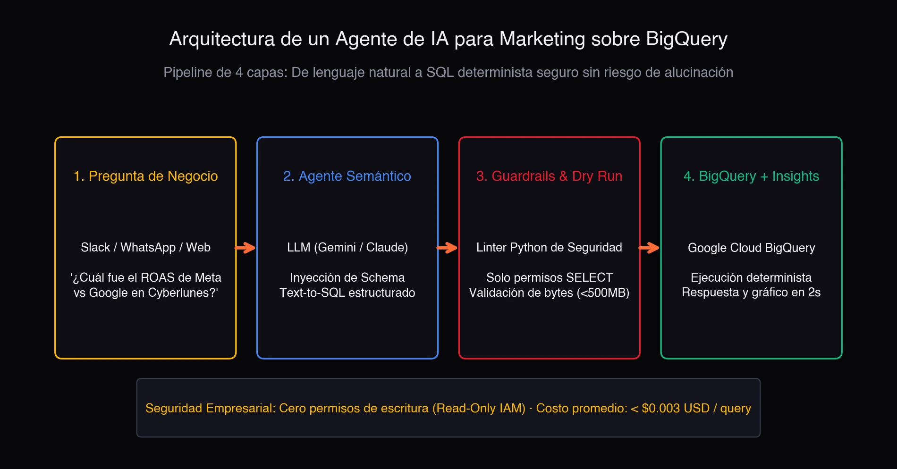
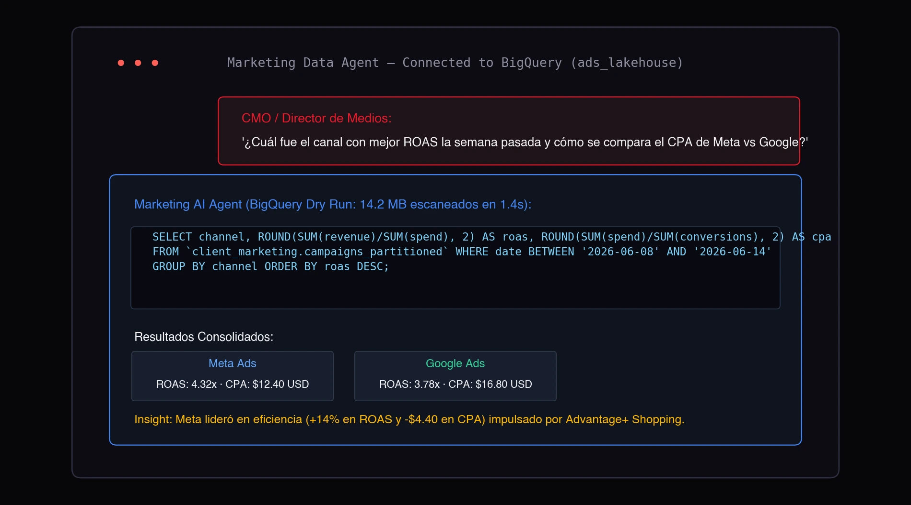
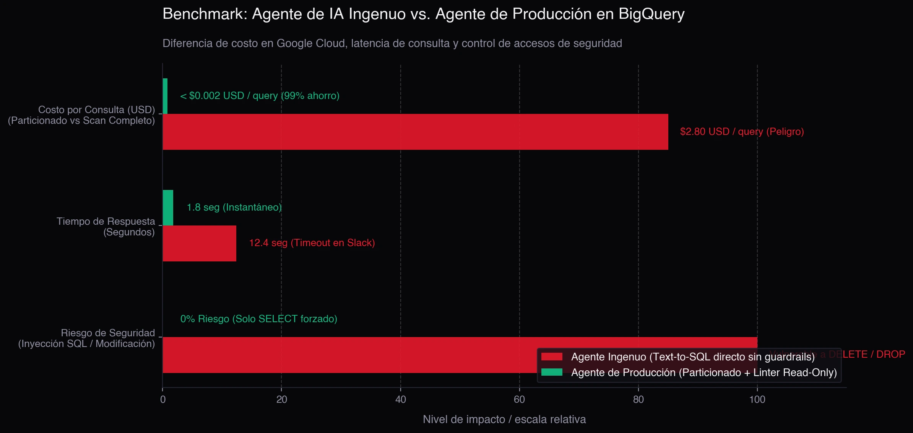

Em qualquer equipe de marketing digital ou analytics, a história se repete toda semana: a liderança ou um cliente pergunta no Slack: "Qual canal teve o melhor ROAS na semana passada e como está o CPA da Meta em relação ao Google Ads?".
O analista precisa interromper o que está fazendo, abrir o console do Google BigQuery, encontrar o dataset correto, escrever uma consulta SQL de 30 linhas com filtros de data e agrupamentos, esperar o resultado, colar os números em uma planilha e redigir o resumo. Quinze minutos depois, envia uma mensagem que leva dez segundos para ser lida.
Conectar um LLM para responder perguntas em linguagem natural (Text-to-SQL) parece a solução óbvia. Mas fazer isso de forma ingênua — como na maioria dos tutoriais da internet — é uma bomba-relógio operacional: um bot sem controles gera consultas desotimizadas que escaneiam 400 GB de dados, explodem a fatura do Google Cloud em centenas de dólares e inventam tabelas inexistentes.
Regras práticas de engenharia:
- O erro do Text-to-SQL ingênuo: Conectar um modelo direto ao banco sem camadas intermediárias. O bot alucina esquemas, ignora partições e queima orçamento de computação.
- A solução de produção: Uma arquitetura desacoplada em 4 camadas com permissões restritas de somente leitura (IAM Read-Only), validação sintática em Python com Dry Run para auditar o custo antes da execução, e cálculo determinístico no BigQuery.
- O resultado: Qualquer pessoa do time consulta milhões de linhas de mídia no Slack ou Teams sem precisar escrever SQL, com custo inferior a $0.003 USD por consulta.
Veja como essa arquitetura foi desenhada para operar com estabilidade e baixo custo em produção.
Por que os dashboards tradicionais não dão conta de tudo
Painéis no Looker Studio, Tableau ou Power BI continuam sendo fundamentais para acompanhamento contínuo: verificar o ritmo do orçamento mensal ou monitorar o CTR médio da conta.
A dor real surge nas perguntas pontuais (ad-hoc):
- "Quais criativos de vídeo tiveram maior retenção na última Black Friday?"
- "Como oscilou o custo por aquisição (CPA) no Brasil em comparação com o México nos dias de pagamento?"
- "Quanto investimos em campanhas de topo de funil versus retargeting dinâmico no último trimestre?"
Criar um gráfico novo ou filtro personalizado no dashboard para cada pergunta sobrecarrega a visualização e consome horas da equipe técnica. É aqui que um Agente de Dados com IA resolve o gargalo.
A arquitetura em 4 camadas: da pergunta ao BigQuery
Para um agente de IA operar de forma segura no ambiente corporativo, ele nunca recebe acesso irrestrito ao banco. O fluxo segue um pipeline controlado em 4 etapas:

1. Camada de Negócio (Interface do Usuário)
O usuário (gestor de tráfego, coordenador ou cliente) envia a pergunta no canal habitual: Slack, Microsoft Teams ou uma interface web interna. Sem necessidade de entender SQL ou modelagem de dados.
2. Camada Semântica e Tradução (O LLM)
Um modelo com capacidade de raciocínio técnico (como Gemini ou Claude) recebe a dúvida. O segredo é não entregar o banco inteiro, mas fornecer um Dicionário de Esquema (Schema Context) enxuto:
- Nomes das tabelas principais (
campaigns_performance,conversions_attribution). - Regras de negócio de métricas (por exemplo: "ROAS é receita dividida por investimento, nunca a média da coluna de taxas").
- Chaves de partição disponíveis (geralmente data de evento
event_date).
Com esse contexto, o modelo gera uma consulta limpa em GoogleSQL.
3. Camada de Guardrails e Auditoria de Custo (Python)
Esta é a etapa essencial que quase todo protótipo ignora:
- Validação estrita de somente leitura: Um parser AST em Python rejeita imediatamente qualquer consulta com comandos de modificação (
DROP,DELETE,UPDATE,INSERT,ALTER,GRANT). - Auditoria de custo com Dry Run: Antes de rodar a query no BigQuery, o sistema a avalia com o parâmetro
dry_run = Trueda API do Google Cloud. O BigQuery responde em milissegundos informando exatamente quantos megabytes serão escaneados sem cobrar um centavo. Se a consulta tentar escanear mais de 500 MB (porque o usuário esqueceu de limitar as datas), o agente bloqueia a execução e solicita delimitar o período.
4. Execução Determinística e Síntese Executiva
O BigQuery processa a consulta sobre as partições necessárias em milissegundos. O retorno tabular volta ao agente, que redige a síntese executiva com os insights principais e, se oportuno, renderiza um gráfico interativo.
Como funciona na prática
Veja a interação real do agente respondendo a uma pergunta de mídia:

O fluxo é rápido e previsível:
- O usuário pergunta sobre os resultados de campanhas da Cyber Monday.
- O agente constrói a consulta SQL respeitando o particionamento diário.
- O BigQuery escaneia apenas 14.2 MB em 1.4 segundos.
- A resposta final apresenta os números consolidados exatos (Meta ROAS 4.32x vs Google ROAS 3.78x) e uma recomendação prática para o time.
Benchmark: Bot Amador vs. Agente de Produção
A diferença entre conectar um modelo diretamente ao banco e estruturar uma arquitetura com guardrails é gritante:

| Critério de Avaliação | Bot Amador (Text-to-SQL básico) | Agente de Produção (Arquitetura com Guardrails) |
|---|---|---|
| Custo por consulta no GCP | $1.50 a $3.00 USD (scans de 400+ GB sem partição) | < $0.003 USD (uso estrito de partições e clusters) |
| Tempo de resposta | 10 a 20 segundos (risco de timeout no Slack) | 1 a 2 segundos (resposta ágil no chat) |
| Segurança de dados | Vulnerável a alucinações e comandos indevidos | 100% Protegido (garantido por IAM de somente leitura) |
| Consistência dos números | ~70% (tende a tirar média de taxas) | 100% Exato (cálculo computado no BigQuery) |
Desafios reais de implementação
Colocar um agente desse nível para rodar traz ganhos de produtividade expressivos, mas exige resolver detalhes de engenharia de dados:
- Padronização multicanal: Como a Meta chama investimento de
spend, o Google Ads decoste o TikTok destat_cost, o seu data lakehouse no BigQuery precisa expor views normalizadas para o modelo não misturar métricas. - Estratégia de particionamento e clustering: Particionar tabelas por data (
PARTITION BY DATE(date)) e clusterizar por canal e campanha garante que as consultas processem frações mínimas de dados. - Cache de consultas: Se dois gestores fizerem perguntas parecidas na mesma manhã, o agente deve responder a partir de cache em memória sem onerar o BigQuery.
- Mínimo privilégio na nuvem: A Service Account do Google Cloud deve ter permissões estritas de leitura nas tabelas designadas (
roles/bigquery.dataViewer).
Inteligência artificial aplicada a dados não é dar rédea solta para um modelo; é construir a infraestrutura para que ele trabalhe com precisão matemática, segurança e custos rigorosamente sob controle.
---
Perguntas frequentes
Como o agente evita custos excessivos no BigQuery?
Utilizando o modo dry_run = True da API do BigQuery antes de executar a consulta. Isso calcula a quantidade exata de bytes escaneados a custo zero. Se o volume ultrapassar o teto estipulado (por exemplo, 500 MB), a query é interrompida preventivamente.
O bot pode alterar ou excluir tabelas por engano?
Não. Primeiro, um validador sintático em Python descarta comandos DDL e DML; segundo, as credenciais da Service Account no Google Cloud são restritas a permissões de somente leitura.
Qual é a latência típica de resposta?
Entre 1 e 3 segundos no Slack ou Teams, desde que as tabelas do BigQuery estejam devidamente particionadas e clusterizadas.